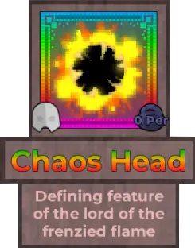
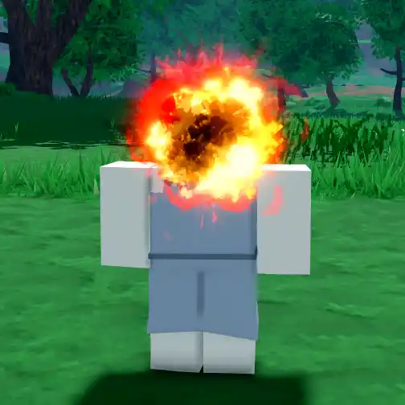
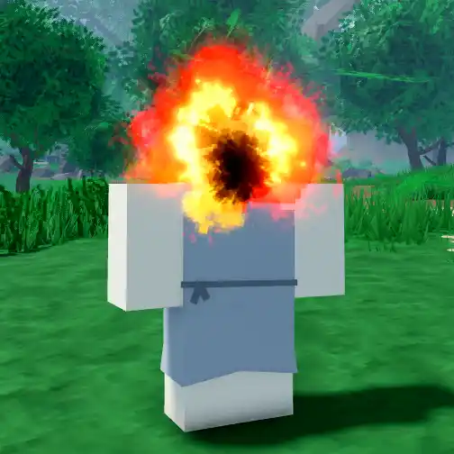
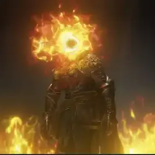

Chaos Head

Info
Slot: Head
Recolorable?: No
Unique Colors: None
Particle Effects: Yes
Sound Effects: None
Owner: SIMIBUS
Appearance & Effects
In-game description: Defining feature of the lord of the frenzied flame
The Chaos Head is a ball of black and red fire that replaces the player's head.
Inspiration
The Chaos Head was inspired by the head of the Lord of Frenzied Flame from Elden Ring. The Chaos Head's owner, SIMIBUS, likes Elden Ring and chose the Chaos Head for this reason.

A player with the Chaos Head equipped

The Chaos Head from a different angle
Image Gallery

The Lord of Frenzied Flame as seen in Elden Ring

CAPTION
CAPTION
CAPTION
CAPTION
CAPTION